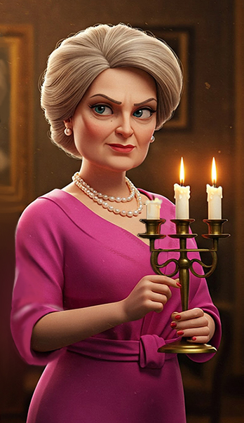

Ms. Magenta
"We were having a lovely dinner, dicussing his job while Ivy ignored the both of us, children.
Midnight? It had a name? I don't know much about botany but Ivy loved that flower, she talked about it more than her own children. I never liked
that those two care more about their plants than their famly, I keep telling them theres more to life than their dirt and weeds.
The last time I saw Thistlewick was after he told Mr.Barnum to wait for him in the study, and said that I should sleep as their talk would last
a while. After that I want to my bedroom to rest for the night."